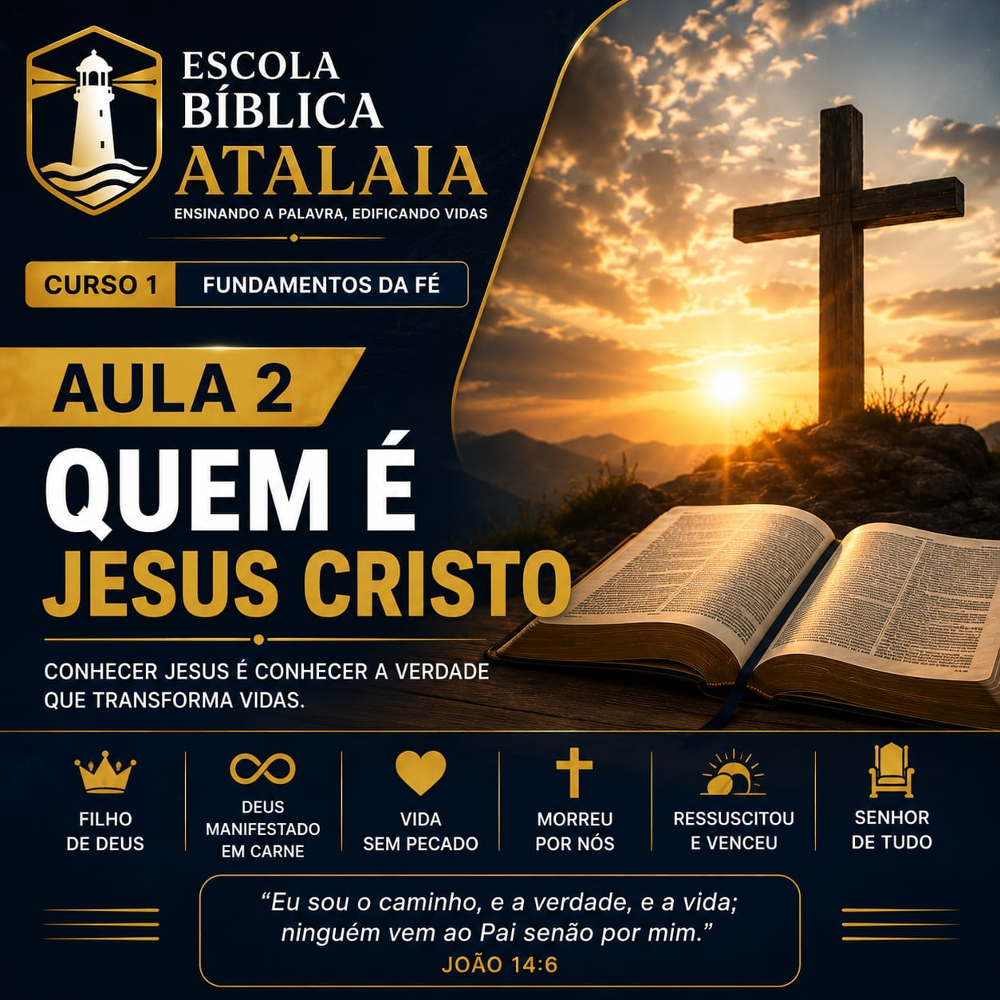
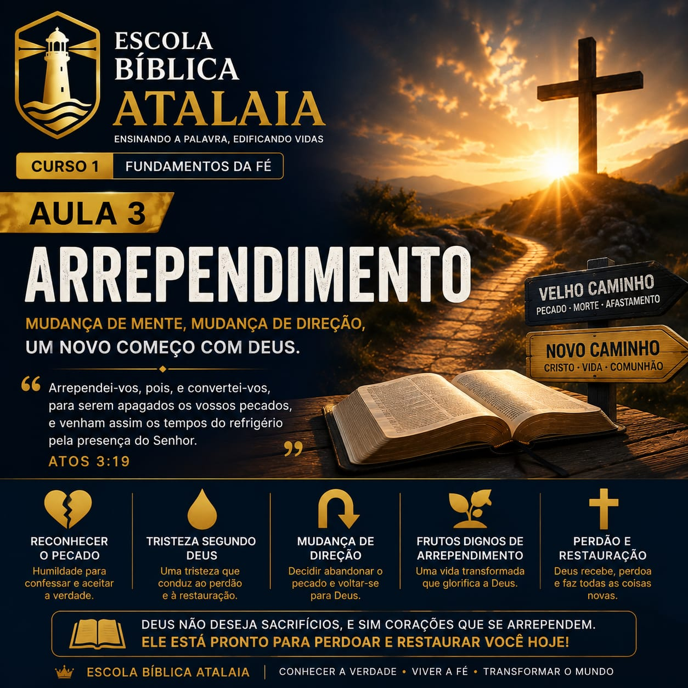
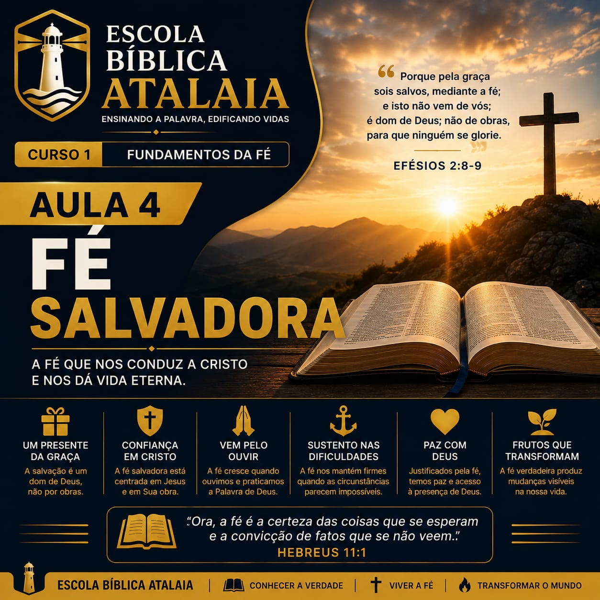
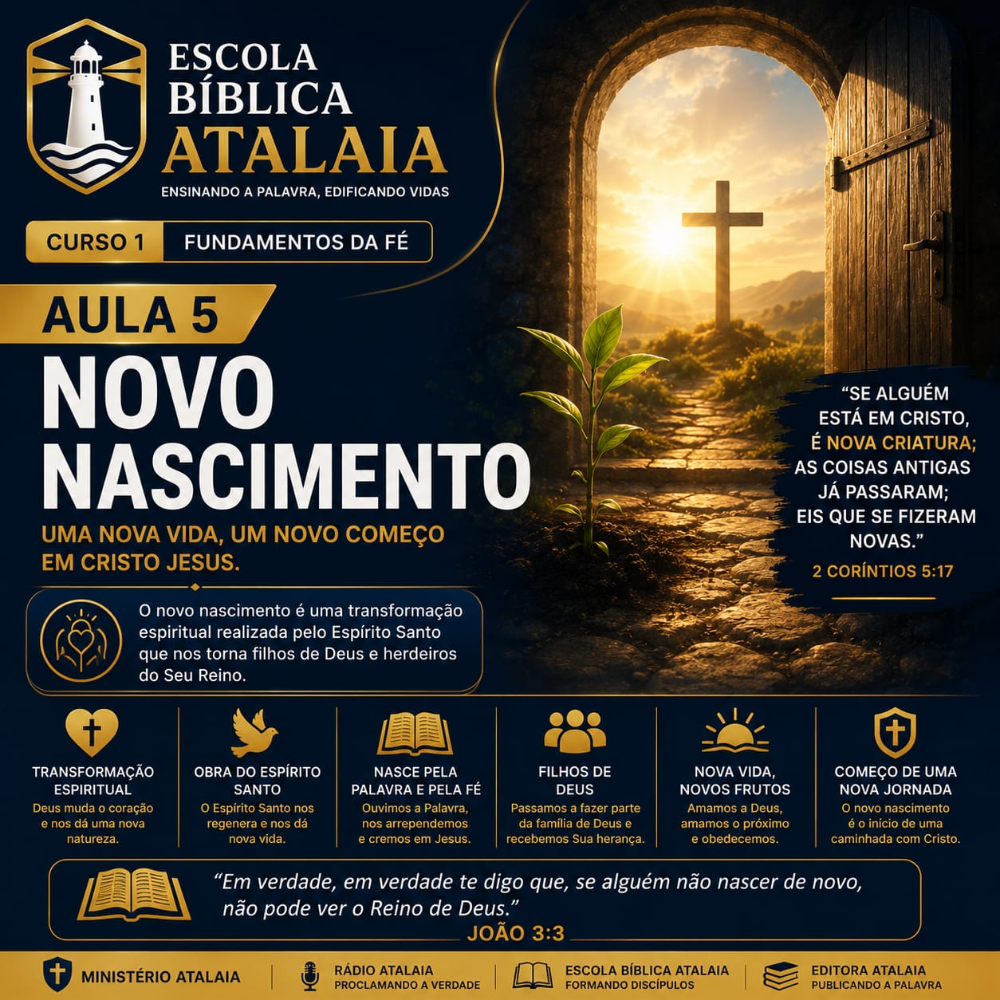
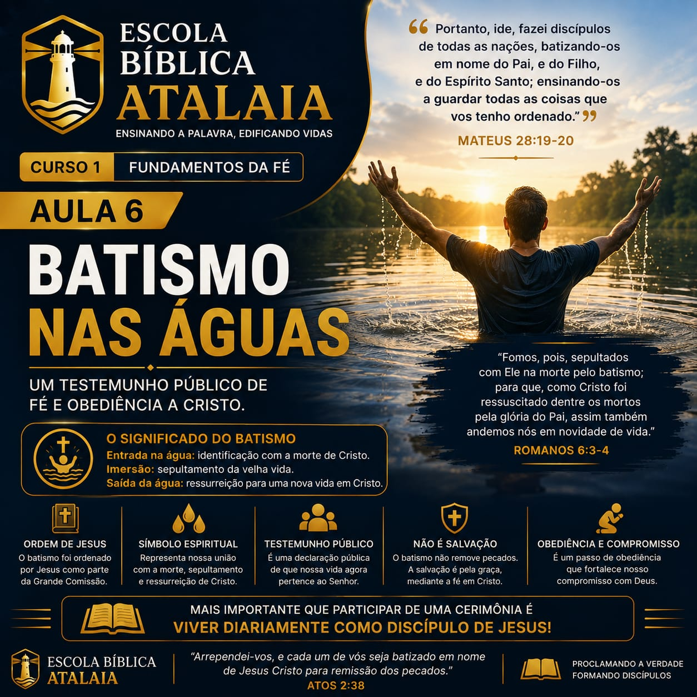
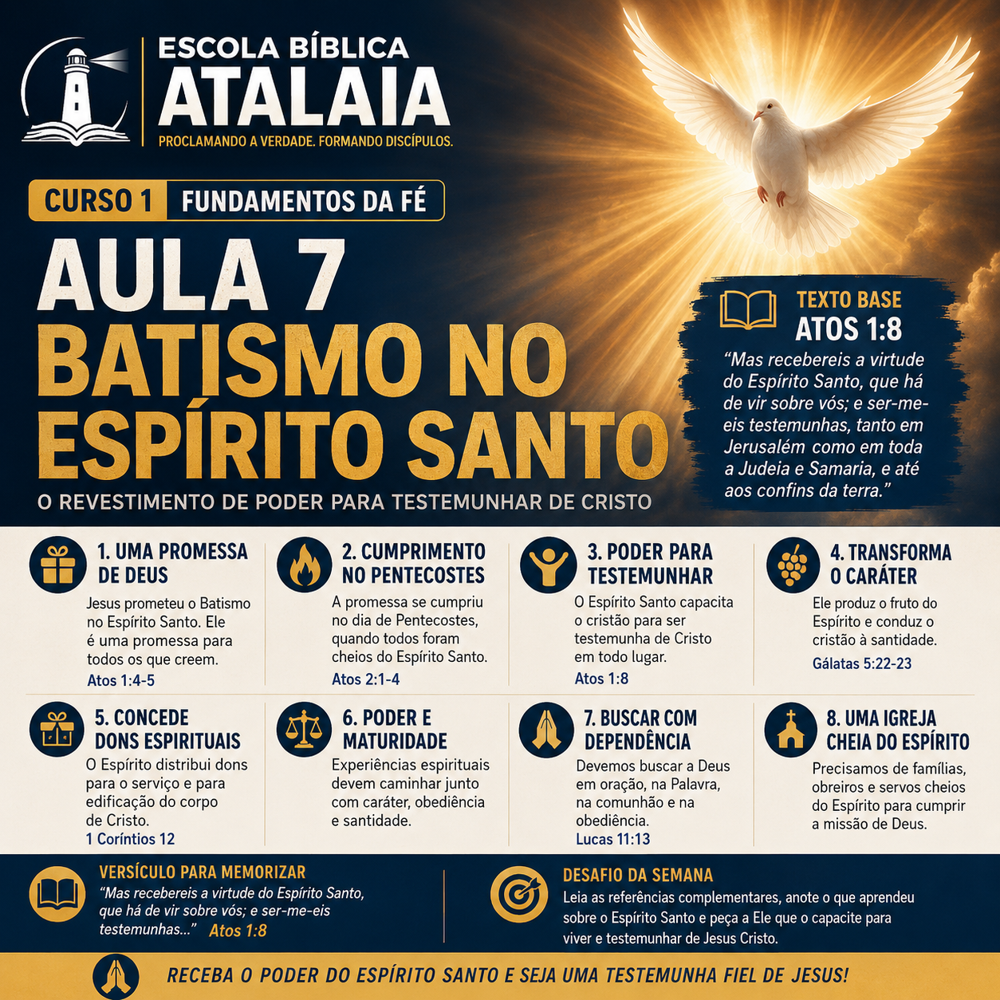
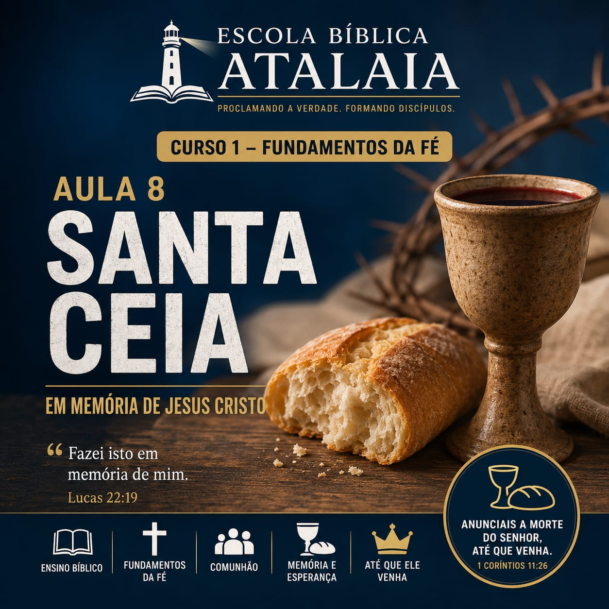

Lição 1
O Plano da Salvação
Nesta lição aprenderemos sobre o plano de Deus para a salvação da humanidade desde Gênesis até Apocalipse.
📄 Visualizar Aula 📝 Responder Questionário
Proclamando a Verdade. Formando Discípulos.

A Escola Bíblica Atalaia foi criada para ensinar a Palavra de Deus de forma organizada, profunda e acessível. Aqui você encontrará cursos completos, áudios, apostilas em PDF e diversos materiais para fortalecer sua caminhada cristã.
Nesta lição aprenderemos sobre o plano de Deus para a salvação da humanidade desde Gênesis até Apocalipse.
📄 Visualizar Aula 📝 Responder Questionário
Conheça a identidade de Jesus Cristo, Seu ministério, Sua obra redentora e Sua divindade revelada nas Escrituras.
📄 Visualizar Aula 📝 Responder Questionário
O verdadeiro arrependimento conduz o pecador à mudança de vida e ao encontro com Cristo.
📄 Visualizar Aula 📝 Responder Questionário
Descubra que a salvação é um presente da graça de Deus, recebido mediante a fé em Jesus Cristo. Aprenda o que é a verdadeira fé salvadora, como ela transforma a vida do cristão e fortalece sua caminhada diária com o Senhor.
📄 Visualizar Aula 📝 Responder Questionário
Compreenda o que Jesus quis dizer ao afirmar que é necessário nascer de novo para entrar no Reino de Deus. Descubra como o Espírito Santo transforma o coração, concede uma nova natureza e inicia uma vida de comunhão, santidade e crescimento espiritual.
📄 Visualizar Aula 📝 Responder Questionário
Compreenda o significado do batismo nas águas e sua importância na vida daquele que decidiu seguir a Cristo. Descubra como o batismo representa a morte, o sepultamento e a ressurreição para uma nova vida, sendo um ato público de fé, obediência e compromisso com Jesus.
📄 Visualizar Aula 📝 Responder Questionário
Compreenda o significado do batismo no Espírito Santo, sua relação com a promessa de Deus e seu propósito na vida do cristão. Descubra como o Espírito Santo capacita o discípulo para testemunhar de Cristo, produz transformação de caráter e concede dons para o serviço e edificação da Igreja.
📄 Abrir Apostila
Compreenda o significado da Santa Ceia, sua instituição pelo Senhor Jesus e sua importância na vida da Igreja. Descubra o significado do pão e do cálice, a importância de participar com reverência e autoexame, a comunhão entre os membros do corpo de Cristo e a esperança na volta do Senhor.
📄 Abrir Apostila
Aprenda sobre a importância da oração na vida cristã e desenvolva uma vida de comunhão com Deus. Compreenda o propósito da oração, os princípios bíblicos para orar, a importância da perseverança e como a oração fortalece a fé e aproxima o cristão da presença de Deus.
📄 Abrir Apostila
Compreenda o significado e o propósito do jejum na vida cristã. Aprenda como o jejum está relacionado à oração, à consagração, ao domínio próprio e à busca pela presença de Deus, compreendendo seus princípios e sua prática segundo as Escrituras.
📄 Abrir Apostila
Entenda o significado da santificação e sua importância na caminhada cristã. Aprenda sobre a separação do pecado, a renovação da mente, a obediência à Palavra de Deus e o processo de transformação do caráter à imagem de Cristo, buscando uma vida de pureza, comunhão e consagração ao Senhor.
📄 Abrir Apostila
Aprenda o que significa permanecer firme na fé diante das provações, tentações e desafios da caminhada cristã. Compreenda a importância da fidelidade, da disciplina espiritual, da confiança em Deus e da perseverança até o fim, mantendo os olhos em Cristo e na esperança da vida eterna.
📄 Abrir Apostila
Estudo da inspiração, autoridade, formação, preservação e importância das Sagradas Escrituras.
📄 Abrir Apostila
Conheça os atributos, a natureza e o caráter de Deus.
📄 Abrir Apostila
Estudo da pessoa e da obra de Jesus Cristo.
📄 Abrir Apostila
Aprenda como desenvolver um caráter semelhante ao de Cristo através da ação do Espírito Santo.
📄 Abrir Apostila
Descubra os dons concedidos pelo Espírito Santo para edificação da Igreja.
📄 Abrir Apostila
Descubra as características daquele que segue Jesus com fidelidade.
📄 Abrir Apostila
Aprenda princípios práticos para anunciar o Evangelho.
📄 Abrir Apostila
Compreenda o chamado de Deus para o ministério e as responsabilidades daqueles que servem ao Reino.
📄 Abrir Apostila
O papel do pastor como servo, líder, mestre e cuidador do rebanho de Cristo.
📄 Abrir Apostila
Conheça os princípios fundamentais da preparação e apresentação de sermões bíblicos.
📄 Abrir Apostila
Aprenda as regras corretas de interpretação das Escrituras Sagradas.
📄 Abrir Apostila
Um panorama completo da formação, divisão e mensagem central da Palavra de Deus.
📄 Abrir Apostila
Autor, contexto histórico, estrutura, personagens, principais acontecimentos e aplicações do livro de Gênesis.
📄 Abrir Apostila
Aprenda a defender a fé cristã com base nas Escrituras e na razão.
📄 Abrir ApostilaAcesse o conteúdo complementar da Escola Bíblica Atalaia.